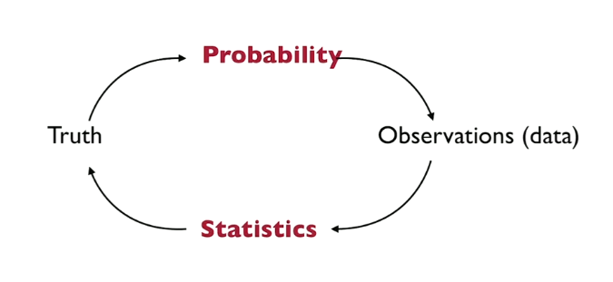

Probability is an essential part of statistics.
On one hand we have truth a data generating process, and in other we have a partial observation of it.
Like in previous kiss example, we have a population of 5000 out of which (say) 35% of them turns their head to the right while kissing, and we randomly select 124 out of those 5000.

Averages arises a lot of the times in Statistics, we replace expectation by averages Law of Large numbers justifies it.Law of large numbers(LLN)
Say we have \(n\) observations.\(X,X_1,X_2,X_3,....,X_n\) be i.i.d random varibles, and \(\mathbb{E}[X]=\mu\) \[\overline{X}_n:=\frac{1}{n}\sum _{i=1}^ n X_ i \xrightarrow [n\to \infty ]{\mathbb{P},\mbox{ a.s.}} \mu\]
\(:=\quad\) this symbol means "by definition"
\(\mathbb{P}\quad\) it means "in Probability"
\(\mbox{a.s.}\quad\) it means "almost surely"
Law of large numbers are of two types:
-
Weak law of large numbers: \[\overline{X}_n:=\frac{1}{n}\sum _{i=1}^ n X_ i \xrightarrow [n\to \infty ]{\mathbb{P}} \mu\]
-
Strong law of large numbers: \[\overline{X}_n:=\frac{1}{n}\sum _{i=1}^ n X_ i \xrightarrow [n\to \infty ]{\mbox{ a.s.}} \mu\]
Note: \(\mbox{ a.s.}\) implies \(\mathbb{P}\)
So Law of large numbers says if we have large enough Sample size then our estimator \(\overline{X}_n\) and real parameter \(\mu\) are close, but how much close, we don't know!
We know \(\overline{X}_n \xrightarrow [n\to \infty] {} \mu\)
We can think it as:
\[ \left|\overline{X}_n -\mu \right| \propto \frac{1}{f(n)} \] where \(f(n)\) is an increasing function w.r.t. \(n\).
So as \(f(n)\) increaseas \(\left|\overline{X}_n -\mu\right| \) decreases.
We want a function \(f(n)\) that increases fastly w.r.t. \(n\) .
\(log(log(n))\) increases very slowly so it's no use for us.
Let's see what CLT says about \(f(n)\)
Central Limit Theorem(CLT)
Say we have \(n\) observations \(X,X_1,X_2,X_3,....,X_n\) be \(i.i.d\) random varibles,\(\mathbb{E}[X]=\mu\) and \(Var(X)=\sigma^2\)
\[\sqrt{n}\, \frac{\overline{X}_n-\mu }{\sigma } \xrightarrow [n\to \infty ]{(d)} \mathcal{N}(0,1) \]
\(\mathcal{N}(0,1) \) is Gaussian distribution with mean = \(0\) and variance = \(1\),
\((d)\): it shows convergence in distribution
We will come to it later for now, we only need to know this formula.
If we draw a standard gaussian \(\mathcal{N}(0,1) \) (say) \(Z\) then with probability \(0.9974\quad\) \(Z\in [-3,3]\)
\(P(-3\leq Z\leq3)=0.9974\quad\) we can calculate it here
So \(Z\) is almost in between -3 and 3
And we know that :
\[\sqrt{n}\, \frac{\overline{X}_n-\mu }{\sigma } \xrightarrow [n\to \infty ]{(d)} \mathcal{N}(0,1) \]
And we say that \(-3\leq\mathcal{N}(0,1)\leq3\)
So:
\[ -3\leq \sqrt{n}\, \frac{\overline{X}_n-\mu }{\sigma } \leq3 \\ \Rightarrow \left|\sqrt{n}\, \frac{\overline{X}_n-\mu }{\sigma } \right| \leq 3 \\ \Rightarrow \left| \overline{X}_n-\mu \right| \leq \frac{3\sigma}{\sqrt{n}} \]
So according to CLT \(f(n)=\sqrt{n}\)
Rule of thumb to apply CLT: when \(n\geq 30\) then \(\sqrt{n}\, \frac{\overline{X}_n-\mu }{\sigma } \xrightarrow []{(d)} \mathcal{N}(0,1) \)